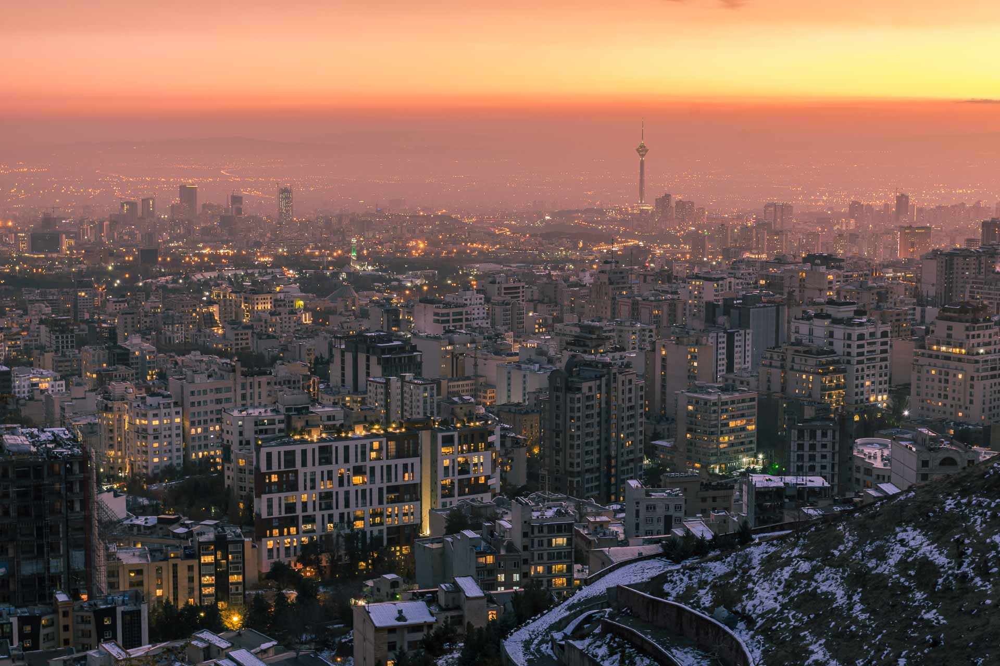

Seja bem vindo ao Irã

O Irã, é uma República Islâmica no Golfo Pérsico (Árabe), com locais históricos do tempo do Império Persa. As extensas ruínas de mármore marcam Persépolis, a capital do império, fundada por Dário I no século VI A.C. A capital moderna, Teerão, alberga o opulento Palácio do Golestão, sede da Dinastia Cajar (1794 – 1925), bem como pontos de referência como a Torre Milad, com 435 metros de altura.
